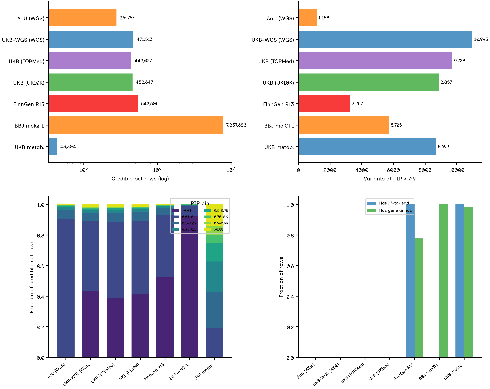
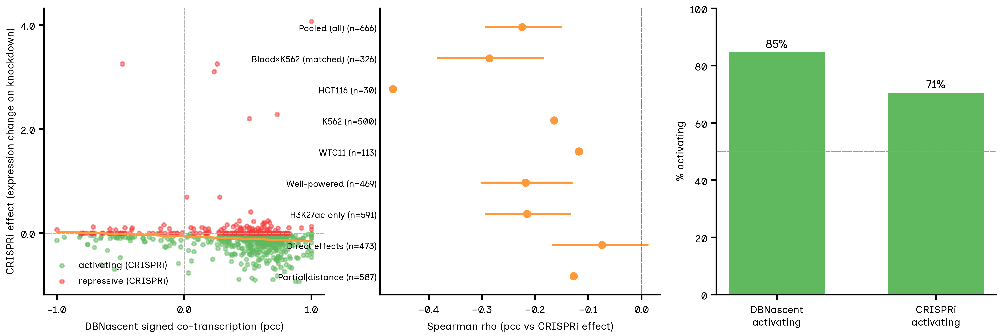
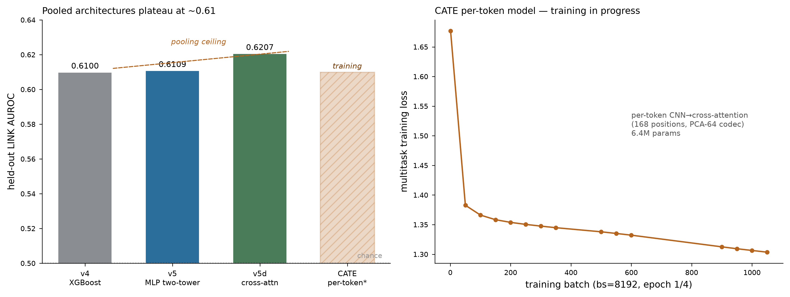
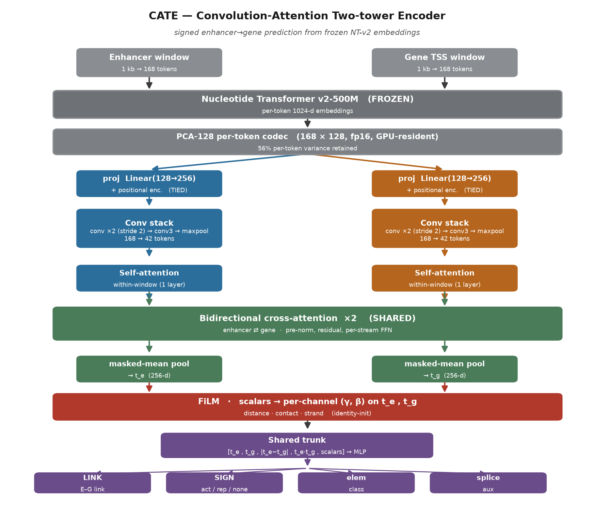
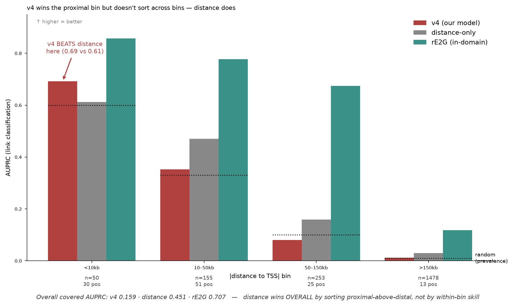
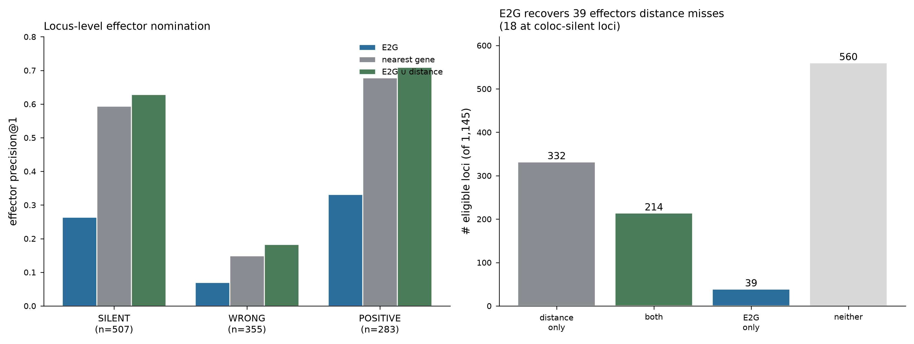
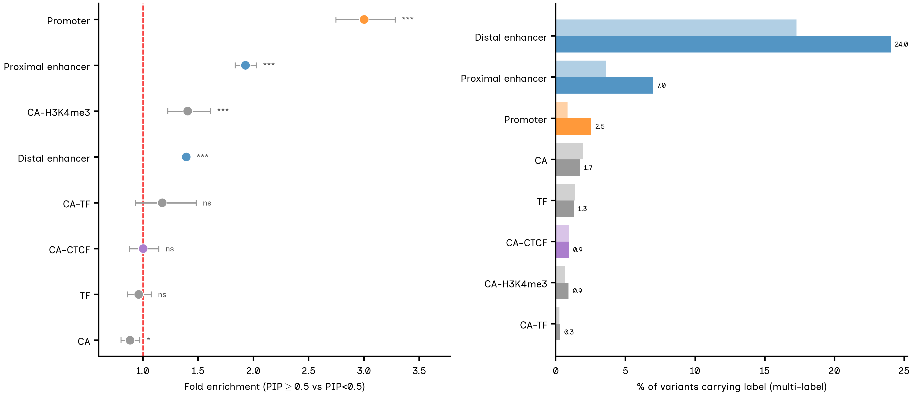

Translational human genetics · Claude Life Sciences Hackathon 2026
Genome-wide association studies have catalogued tens of thousands of trait-associated loci, but naming the causal effector gene — usually acting through a non-coding regulatory variant far from the gene — remains unsolved at scale. The field's default evidence, colocalization of the GWAS signal with a cis molecular QTL, has a ceiling larger than commonly stated. On a harmonized five-source, 10-million-row multi-biobank credible-set substrate we find only 1–2% of confident QTL signals share a causal lead variant with a nearby GWAS signal despite ~90% being colocalization-feasible; on an independent 1,160-locus benchmark cis-eQTL colocalization names the curated effector at only 24.5% of loci (44.7% silent, 30.9% wrong). We build a signed enhancer→gene model over frozen Nucleotide-Transformer-v2 embeddings, supervised by 6.7M FDR-controlled signed pairs from the DBNascent nascent-RNA atlas whose sign tracks CRISPRi effect direction (Spearman ρ = −0.224; blood×K562 odds ratio 5.4). The model does not beat a nearest-gene baseline outright but is complementary: it recovers 39 effector genes distance misses (18 at coloc-silent loci) and uniquely supplies a direction-of-effect call. A methodological finding — link-prediction AUROC plateaus at ~0.61 across three head architectures over pooled embeddings — localizes the ceiling to pooling away sequence positions and motivates a per-token convolution-attention model (CATE).
The interpretive bottleneck of human genetics is unchanged: the overwhelming majority of GWAS-associated variants are non-coding, and translating a credible set into the causal effector gene remains unsolved at scale. The default line of evidence is colocalization — if the same causal variant drives both the trait association and a nearby gene's cis-eQTL or cis-pQTL, that gene is nominated. Colocalization is principled but has a recognized ceiling: a cis-QTL can only colocalize if it is detectable in an assayed tissue, present in the ancestry panel, and driven by the same causal variant. When any fails — as it frequently does for cell-type-specific, context-dependent, or distal regulation — the locus is left unassigned.
We measure that gap on our own data and on an independent benchmark, then build a sequence-based line of evidence that adds what colocalization cannot: a directional enhancer→gene link, available where colocalization is silent.
We assembled a harmonized substrate of statistically fine-mapped credible sets from five sources, all lifted to hg38 — All-of-Us (MultiSuSiE, multi-ancestry), UK Biobank WGS, FinnGen R13, BioBank Japan molecular QTLs, and UKB NMR metabolomics — totaling 10,072,543 rows on a unified 17-column schema. Because no source carries a standard error, full coloc.abf cannot be recomputed; we instead measured the conservative shared-lead overlap on our substrate and reused authors' published colocalization results for external corroboration.

Three independent flagship resources converge on the same gap using their own published numbers: UKB-PPP reports 65% of eQTL-genes colocalize with pQTL (35% do not); FinnGen R13's public new-loci analysis resolves eQTL colocalization at 14.8% (4/27); BBJ reports limited eQTL–pQTL colocalization as its headline. On our benchmark of 1,160 loci (Open Targets L2G gold standard × OT Platform 26.06 colocalization), the coloc-silent fraction is 44.7% and rises to 75.6% not-correctly-resolved once coloc-wrong loci are included.
No existing E2G method — ABC, ENCODE-rE2G, scE2G — predicts whether an element activates or represses its target, yet direction is essential to compose a variant's regulatory effect into a signed effect on the trait. We derived 6,700,460 signed enhancer→gene pairs at FDR < 0.01 across 11 tissues from the DBNascent nascent-RNA atlas (validated to Pearson r = 1.0 against the published pairs), plus a clean-room mouse reimplementation (9.4M pairs, 20 cell-type groups, human-validated to Pearson = 1.0).
The gate for the whole premise: does the sign of nascent co-transcription agree with a measured causal perturbation? Against ENCODE-rE2G CRISPRi (the field-standard causal truth set), it does — weakly but robustly.

Element and gene-promoter windows were embedded with the frozen Nucleotide Transformer v2 (500M-parameter multispecies model). We trained a family of heads over the identical embeddings, then asked whether richer heads improve on gradient-boosted trees. Two successors on the combined human+mouse data (chromosomes 3 and 13 held out): v5, a pooled MLP two-tower with a learned interaction block; and v5d, a 2-token cross-attention encoder.
| Model | Head over pooled NT-v2 embeddings | LINK AUROC | SIGN (rep) AUROC |
|---|---|---|---|
| v4 | XGBoost, PCA-613, shallow heads | ~0.61 | ~0.61 |
| v5 | pooled MLP two-tower, multi-task trunk | 0.611 | 0.605 |
| v5d | 2-token cross-attention encoder | 0.621 | ~0.63 |

This motivated CATE — a Convolution-Attention Two-tower Encoder that reads the 168 real sequence positions rather than a single pooled vector. A PCA-128 per-token codec (56% variance retained) is held resident on-GPU; stacked convolutions with max-pooling reduce 168→42 tokens, self- and bidirectional cross-attention couple enhancer and gene, and FiLM conditioning lets distance/contact/strand gate the sequence signal before a shared multi-task trunk.

On out-of-domain K562 CRISPRi the model's overall covered AUPRC (0.159) sits below distance-alone (0.451) and in-domain rE2G (0.707). Distance-stratified analysis shows this is a Simpson's-paradox artifact: distance wins overall by sorting proximal-above-distal (CRISPRi positives are proximal), not by within-stratum skill. The model wins the proximal <10 kb stratum (0.692 vs distance 0.612) and exceeds prevalence in every bin.

Locus-level effector nomination is out-of-distribution for a model trained to rank enhancers for a gene, and nearest-gene distance is a strong baseline (47.7% precision@1) that beats naive E2G (22.1%) in aggregate. The honest and defensible claim is complementarity: E2G recovers 39 effectors distance misses — lifting union recovery to 51.1% — of which 18 sit at loci where colocalization is entirely silent. Stratified by coloc status, the union gain is largest exactly where it should be (silent loci: distance 0.594 → union 0.629). And uniquely, the model supplies a regulatory sign.

A supporting analysis confirms the modeling premise. Among fine-mapped GWAS variants (PIP ≥ 0.5, ENCODE SCREEN cCRE annotation, low-PIP members of the same loci as background), 38.7% overlap a regulatory element vs 26.9% of background — fine-mapping concentrates posterior into annotated regulatory DNA. Promoters are enriched 3.0× and enhancers ~1.4–1.9×, while CTCF and generic open-chromatin classes are not — the exact classes a sequence-based enhancer→gene model is built to read.

The signed E2G edge adds two things the incumbents lack — direction, and availability at coloc-silent loci — and is offered as an orthogonal, not a replacement, line of variant-to-gene evidence. The central methodological finding is the pooled-embedding plateau, which localizes the ~0.61 link-AUROC ceiling to the pooling step rather than head capacity and identifies per-token modeling (CATE) as the forward path.
Limitations, stated plainly. The repression arm is underpowered (the class is ~19% of confident labels; a repression-enriched screen is needed) and sign is learnable but modest (~0.60–0.63 AUROC). The DBNascent label tracks direction only weakly (ρ = −0.224), though robustly. The substrate lacks standard errors, so we reuse published colocalization rather than recompute, and it is ancestry-skewed (EAS-heavy molecular QTL), so some "silent" calls may be panel-coverage artifacts. The full variant-to-gene-to-trait signed chain — variant-to-element, gene-to-trait, and their composition — is a roadmap, not a claim made here.
Substrate: five-source fine-mapped credible sets, hg38, 10.07M rows, unified schema; confident = PIP ≥ 0.5. Colocalization: shared-lead overlap on-substrate (no SE available); published harvest from UKB-PPP (coloc.susie PP.H4≥0.8), FinnGen R13 (ST8), BBJ (product-of-PIP CLPP). Benchmark: Open Targets L2G gold standard (Mountjoy 2021) × OT Platform 26.06 coloc (COLOC_PIP_ECAVIAR h4≥0.8), 1,160 resolved loci. Labels: DBNascent signed pairs, FDR<0.01, 11 tissues; mouse reimplemented clean-room. Embeddings: frozen NT-v2-500M; pooled PCA-613 basis (v4/v5) or per-token PCA-128 codec (CATE). Concordance: 666 CRISPRi-matched pairs, continuous Spearman ρ + cell-type-matched odds ratio. Enrichment: ENCODE SCREEN cCRE v3, Fisher exact, Katz CIs. All benchmark truth firewalled from training; cis-eQTL enters only as baseline/validator, never as a training label.
Data and code. Model, training code, benchmark tables, colocalization harvest, and the multi-biobank substrate are archived as project artifacts and in the project repository. Numbers in this document are traceable to canonical checkpoints; none is invented. CATE per-token training was in progress at time of writing; reported model numbers (v4/v5/v5d, utility, benchmark) are final on their stated splits.
Generated 2026-07-14 · Claude Life Sciences Hackathon · MIT-licensed · Jerome Irudayanathan.